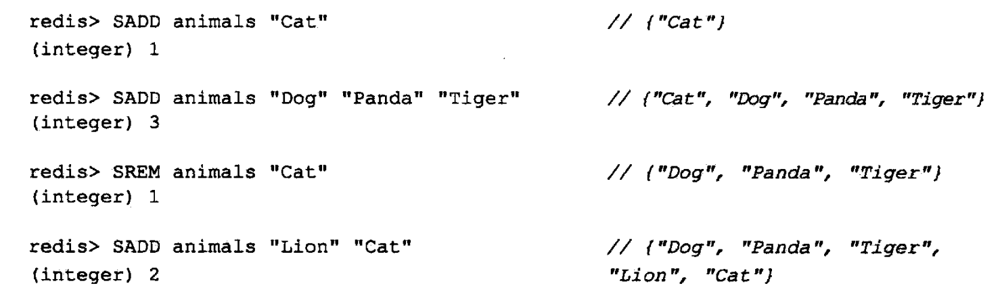
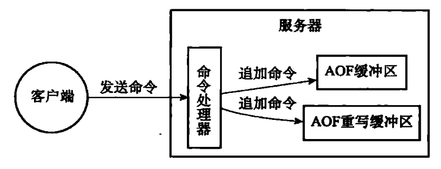
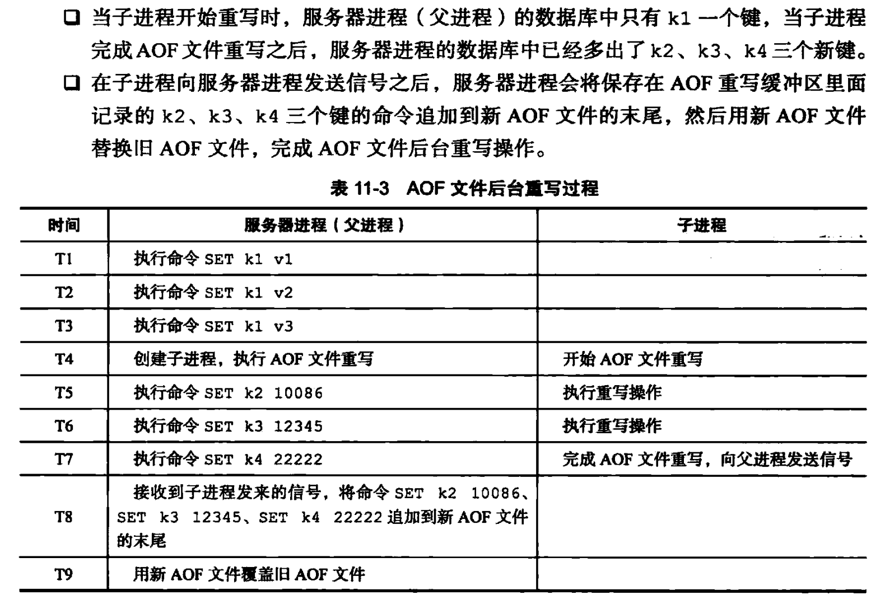

持久化机制 #
1 什么是持久化 #
- 持久化就是把内存的数据写到磁盘中去，防止服务宕机了内存数据丢失。
2 Redis 中持久化机制有哪些 #
Redis 中持久化机制主要有两种，分别是RDB（默认）和AOF。
2.1 RDB #
2.1.1 含义 #
- RDB 文件主要用于保存和还原 Redis 服务器所有数据库中的所有键值对数据。
- 创建方式主要有两种，分别是
SAVE和BGSAVE：SAVE命令由服务器进程直接执行保存操作，所以该命令会阻塞服务器。BGSAVE命令由子进程执行保存操作，所以该命令不会阻塞服务器。
- 因为
BGSAVE命令可以在不阻塞服务器进程的情况下执行，所以可以通过设置服务器配置的save选项，让服务器每隔一段时间自动执行一次BGSAVE命令，用户可以通过save选项设置多个保存条件，但只要其中任意一个条件被满足，服务器就会执行BGSAVE命令。
2.1.2 优缺点 #
2.1.2.1 优点 #
- 整个 Redis 数据库只包含一个文件，这对于文件备份来说非常方便，比如，我们可能打算每个小时归档一次最近 24 小时的数据，同时还要每天归档一次最近 30 天的数据，通过这样的备份策略，一旦系统出现灾难性故障，我们可以非常容易的进行恢复。
- 对于灾难性恢复而言，RDB 也是一个不错的选择，因为我们可以非常轻松的将一个单独的文件压缩后再转移到其他存储介质上。
- 性能最大化，对于 Redis 的服务进程而言，在开始持久化时，他唯一需要做的只是
fork出子进程，之后再由子进程完成这些持久化的工作，这样可以极大地避免服务进程执行 IO 操作。 - 相比于 AOF 机制，如果数据集很大，RDB 的启动效率会更高。
2.1.2.2 缺点 #
- 数据安全性低，因为RDB 是间隔一段时间进行持久化，如果持久化之前 Redis 发生故障，会发生数据丢失，所以这种方式更适合数据要求不严谨的时候。
2.2 AOF #
2.2.1 含义 #
- AOF 文件通过保存所有修改数据库的写命令请求来记录服务器的数据库状态。
- 命令请求会先保存到 AOF 缓冲区里面，之后再定期写入并同步到 AOF 文件，然后服务器只要载入并重新执行保存在 AOF 文件中的命令，就可以还原数据库本来的状态。
2.2.2 持久化的效率和安全性 #
-
appendfsync选项的不同值对 AOF 持久化功能的安全性以及 Redis 服务器的性能有很大的影响：-
当
appendfsync的值为always时：- 服务器在每个事件循环都要将
aof_buf缓冲区中的所有内容写入到 AOF 文件，并且同步 AOF 文件。 - 所以
always的效率是最低的，但却是最安全的，因为即使出现故障停机，AOF 持久化也只会丢失一个事件循环中所产生的的命令数据。
- 服务器在每个事件循环都要将
-
当
appendfsync的值为everysec时：- 服务器在每个事件循环都要将
aof_buf缓冲区的所有内容写入到 AOF 文件，并且每隔一秒就要在子线程中对 AOF 文件进行一次同步。 - 从效率上来讲，
everysec模式足够快，并且就算出现故障停机，数据库也只会丢失一秒钟的命令数据。
- 服务器在每个事件循环都要将
-
当
appendfsync的值为no时：- 服务器在每个事件循环都要将
aof_buf缓冲区的所有内容写入到 AOF 文件，至于何时对 AOF 文件进行同步，则由操作系统控制。 - 因为该模式下
flushAppendOnlyFile调用无须执行同步操作，所以该模式下的AOF 文件写入速度是最快的，不过因为该模式下会在系统缓存中积累一段时间的写入数据，所以该模式的单次同步时长是最长的，当出现故障停机时，将会丢失上次同步 AOF 文件之后的所有鞋命令数据。
- 服务器在每个事件循环都要将
-
- 文件写入和文件同步的区别？
- 文件写入是指写入到内存缓冲区中，文件同步是指将内存缓冲区中的数据刷新到磁盘中。
- 事件循环是什么？
- Redis服务器进程就是一个事件循环，这个循环中的文件事件负责接收客户端的命令请求，以及向客户端发送命令回复，而时间事件则负责像
serverCron函数这样需要定时运行的函数。
2.2.3 AOF 重写 #
2.2.3.1 前言 #
- 因为 AOF 持久化是通过保存被执行的写命令来记录数据库状态的，所以随着服务器运行时间的流逝，AOF 文件中的内容会越来越多，文件的体积也会越来越大。
- 如果不加以控制，体积过大的 AOF 文件可能会对 Redis 服务器，甚至整个宿主计算机造成影响，同时使用 AOF 文件来进行数据还原所需要的时间也会越来越多，为了解决 AOF 体积膨胀的问题，Redis 提供了文件重写的功能。
- 通过文件重写，Redis 服务器可以创建一个新的 AOF 文件来替代现有的 AOF 文件，新旧两个 AOF 文件所保存的数据库状态相同，但新 AOF 文件不会包含任何浪费空间的冗余命令，所以新 AOF 文件的体积通常会比旧 AOF 文件的体积要小得多。
2.2.3.2 原理 #
- AOF 重写功能的实现原理是从数据库中读取键现在的值，然后用一条命令去记录键值对，代替之前记录这个键值对的多条命令。
- 这样通过 AOF 重写生成的新 AOF 文件只包含当前数据库状态所必须的命令，因此不会浪费任何硬盘空间。
- 在实际中，为了避免在执行命令时造成客户端输入缓冲区溢出，重写程序在处理列表、哈希表、集合、有序集合这四种可能会带有多个元素的键时，会先检查所包含的元素数量，如果元素数量超过了
src/redic.h/REDIS_AOF_REWRITE_ITEMS_PER_CMD常量的值（当前版本为 64），那么重写程序将使用多条命令来记录键的值，而不单单使用一条命令。 - 具体的示例如下：
-
假如服务器对
animals键执行了以下命令：
-
为了记录
animals键的状态，AOF 文件必须保存上面列出的四条命令。 -
如果服务器想减少保存
animals键所需命令的数量，那么服务器可以通过读取animals键的值，然后用一条SADD animals "Dog" "Panda" "Tiger" "Lion" "Cat"命令来代替上面的四条命令，这样就将保存animals键所需的命令从 4 条减为一条了。 -
除了上面列举的列表键和集合键之外，其他所有类型的键都可以用同样的方法去减少 AOF 文件中的命令数量。
-
2.2.4 AOF 后台重写 #
2.2.4.1 前言 #
- 上面介绍的 AOF 重写程序
aof_rewrite()函数可以很好地完成创建一个新的 AOF 文件的任务，但是，因为这个函数会进行大量的写入操作，所以调用这个函数的线程将被长时间阻塞，因为Redis 服务器使用单线程来处理命令请求，所以如果这个服务器直接调用aof_rewrite()函数的话，那么在重写 AOF 文件期间，服务器将无法处理客户端发来的命令请求。 - 因此 Redis 决定将 AOF 重写程序放到子线程里执行，这样做可以同时达到两个目的：
- 子进程进行 AOF 重写期间，服务器进程（父进程）可以继续处理命令请求。
- 子进程带有服务器进程的数据副本，使用子进程而不是线程，可以在避免使用锁的情况下，保证数据的安全性。
2.2.4.2 原理 #
-
虽然使用子进程有诸多好处，但是使用子进程也有一个问题需要解决，因为子进程在进行 AOF 重写期间，服务器进程还需要继续处理命令请求，而新的命令可能会对现有的数据库状态进行修改，从而使得服务器当前的数据库状态和重写后的 AOF 文件所保存的数据库状态不一致，例如：
- 假如当子进程开始进行文件重写时，数据库中只有
k1一个键，但是当子进程完成 AOF 文件重写之后，服务器进程的数据库中已经新设置了k2、k3、k4三个键，因此，重写后的 AOF 文件和服务器当前的数据库状态并不一致，新的 AOF 文件只保存了k1一个键的数据，而服务器数据库现在却有k1、k2、k3、k4四个键。 - 上面的执行过程如下所示：

- 假如当子进程开始进行文件重写时，数据库中只有
-
为了解决这种数据不一致问题，Redis 服务器设置了一个AOF 重写缓冲区，这个缓冲区在服务器创建子进程之后开始使用，当 Redis 服务器执行完一个写命令之后，他会同时将这个写命令发送给 AOF 缓冲区和 AOF 重写缓冲区。

-
这样一来可以保证：
- AOF 缓冲区的内容会定期被写入和同步到 AOF 文件，对现有 AOF 文件的处理工作会如常进行。
- 从创建子进程开始，服务期执行的所有写命令都会被记录到 AOF 重写缓冲区里面。
-
当子进程完成 AOF 重写工作之后，他会向父进程发送一个信号，父进程在接收到该信号后，会调用一个信号处理函数，并执行以下工作：
- 将 AOF 重新缓冲区中的所有内容写入到新 AOF 文件，这时新 AOF 文件所保存的数据库状态将和服务器当前的数据库状态一致。
- 对新的 AOF 文件进行改名，原子地覆盖现有的 AOF 文件，完成新旧两个 AOF 文件的替换。
-
这个信号处理函数执行完毕之后，父进程就可以像往常一样接受命令请求了。
-
在整个 AOF 后台重写过程中，只有信号处理函数执行时会对服务器进程（父进程）造成阻塞，在其他时候，AOF 后台重写都不会阻塞父进程，这将 AOF 重写对服务器性能造成的影响降到了最低。
-
具体示例如下：

2.2.5 优缺点 #
2.2.5.1 优点 #
2.2.5.2 缺点 #
- 对于相同数量的数据集而言，AOF 文件通常要大于 RDB 文件，而且因为 AOF 文件记录的是执行命令，在恢复的时候需要重新执行相应的命令，RDB 存储是数据，恢复时直接恢复即可，因此RDB 在恢复大数据集时的速度比 AOF 的恢复速度要快。
- 根据同步策略的不同，AOF 在运行效率上往往会慢于 RDB。
3 如何选择何时的持久化方式 #
- 一般来说，如果想达到足以达到 PostgreSQL 的数据安全性，我们应该同时使用两种持久化功能，在这种情况下，当Redis 重启的时候，会优先载入 AOF 文件来恢复原始的数据，因为在通常情况下 AOF 文件保存的数据集要比 RDB 保存的数据集要完整。
- 如果我们可以承受数据分钟以内的丢失，那么可以只使用 RDB 持久化。
- 一般不推荐只使用 AOF 持久化，因为定时生成的 RDB 快照非常便于数据库备份，并且RDB 恢复数据集的速度要比 AOF 快。
参考文献 #
- 几率大的 Redis 面试题（含答案）。
- Redis 面试题（总结最全面的面试题）。
- redis 持久存储 RDB 和 AOF 的区别及优缺点。
- redis 设计与实现（第二版）。